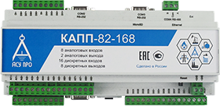
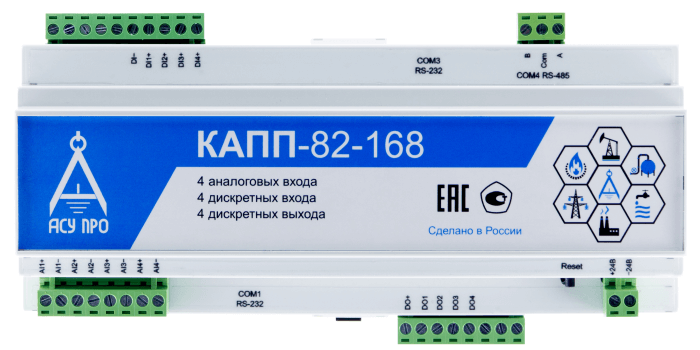
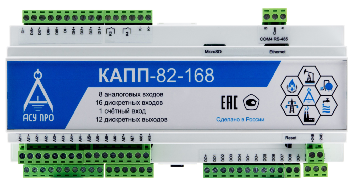
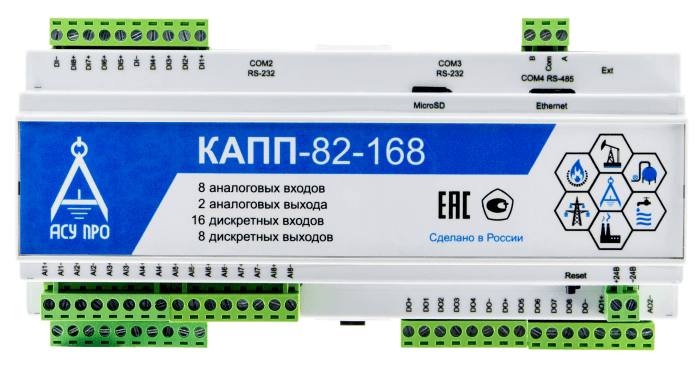
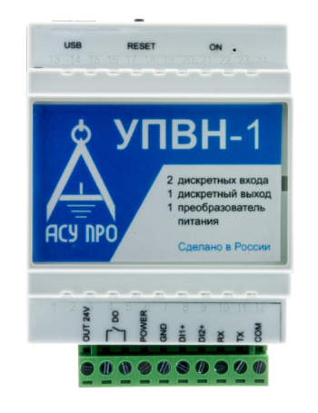

Микропроцессрная техника
В Системах АСУ ТП широко используются микропоцессорная техника. ООО "АСУ ПРО" предлагает программно-логистические контроллеры и устройства управления нагрузкой собственного производства:
Программно-логистические контроллеры
Контроллер для малых объектов КАПП-82-168

Моноблочный программируемый контроллер КАПП-82-168 (Контроллер для Автоматизации Производственных Процессов) предназначен для автоматизации малых объектов (систем телемеханики, вентиляционных систем, котельных и др.)
Подробнее

Модификация контроллера разработана ООО «АСУ ПРО» в 2017 году для применения в составе энергонезависимых систем на неэликтрифицированных объектах.
Подробнее

Модификация контроллера разработана ООО «АСУ ПРО» в 2017 году для расширения области его применения.
Подробнее

Модификация контроллера разработана ООО «АСУ ПРО» в 2017 году для расширения области его применения. Увеличена производительность за счет замены микроконтроллера и увеличения объема оперативной памяти.
Подробнее

Модификация контроллера разработана ООО «АСУ ПРО» в 2018 году для расширения области его применения. Увеличена производительность за счет замены микроконтроллера и увеличения объема оперативной памяти, изменена конфигурация портов RS-232 и RS-485.
Подробнее

Модификация контроллера разработана ООО «АСУ ПРО» в 2018 году для применения в составе энергонезависимых систем на неэлектрифицированных объектах в качестве расширителя дискретных портов ввода/вывода.
Подробнее
Устройства управления нагрузкой
Устройство периодического включения нагрузки
УПВН-1

Устройство периодического включения нагрузки УПВН-1 предназначено для управления нагрузкой по заданным алгоритмам. УПВН-1 имеет в составе преобразователь напряжения с выходом 24 вольта. Прибор имеет встроенный ключ для включения – выключения внешнего оборудования и два дискретных входа управления.
Подробнее